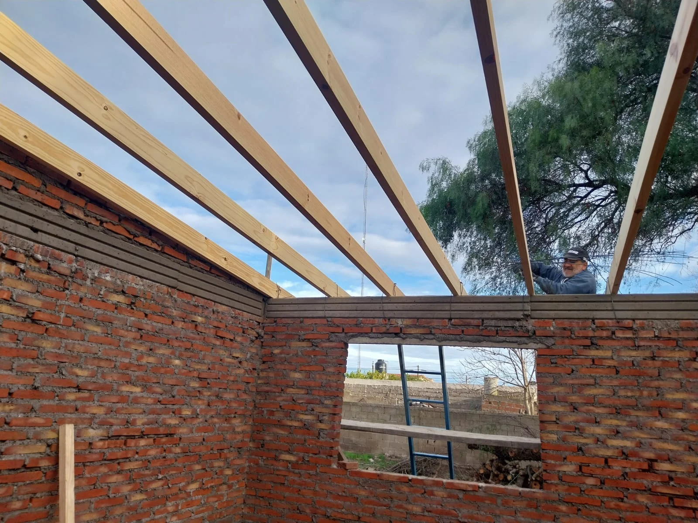

Empezamos por una conversación
Contanos
tu proyecto.
Si tenés un terreno, querés ampliar o estás imaginando tu primer hogar, compartinos tu idea.

Instagram@construccionestata.bb_ ↗Tu consulta
Completá los datos para preparar un mensaje y enviarlo por Instagram.
Copiá el mensaje y pegalo en una conversación de Instagram.
Nuestra zona de trabajo
Bahía Blanca y la región.
Patagonia · Aldea Romana · Cerri · Harding Green · San José · Don Ramiro
Mapa de la zona de atención.